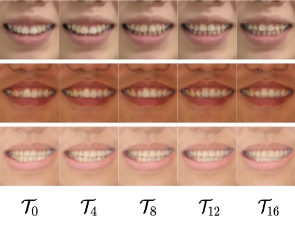
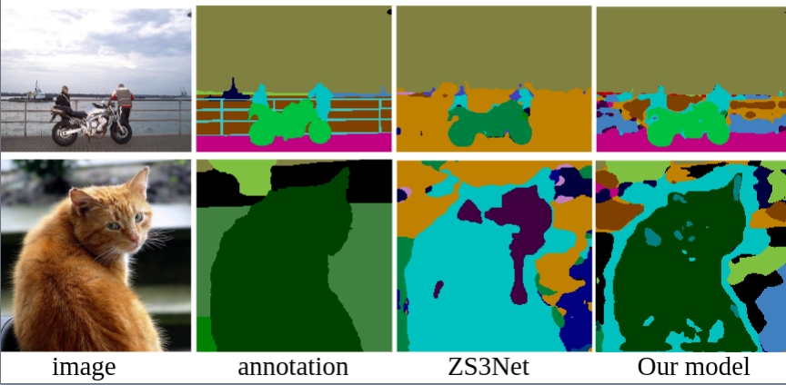
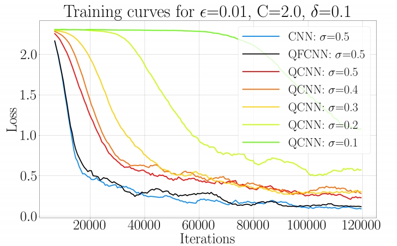

Research
I'm interested in computer vision, deep learning, generative AI, and image processing. Most of my research is about processing dental medical images and 3D patients' teeth.
|
|

|
OrthoGAN:High-Precision Image Generation for Teeth Orthodontic Visualization
Feihong Shen,
Jingjing Liu,
Haizhen Li,
Bing Fang,Chenglong Ma, Jin Hao, Yang Feng, Youyi Zheng
We design a multi-modal encoder-decoder based generative model to synthesize identity-preserving frontal facial images with aligned teeth.
|
|

|
Conterfactual generative zero-shot semantic segmentation
Feihong Shen,
Jun Liu, Ping Hu
We consider counterfactual methods to avoid the confounder in the original model. Based on this method, we proposed a new framework for zero-shot semantic segmentation.
|
|

|
Quantum Fourier Convolutional Network
ACM Transactions on Multimedia Computing, Communications and Applications
Feihong Shen,
Jun Liu
We propose a new hybrid quantum-classical circuit, namely Quantum Fourier Convolutional Network (QFCN).
|
|
{kind=link}